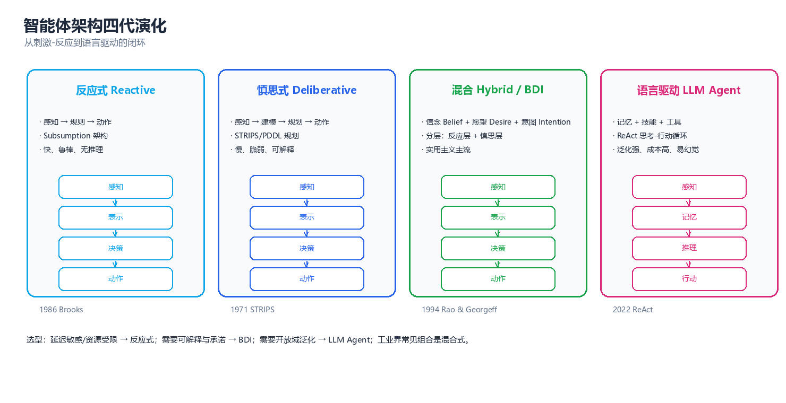
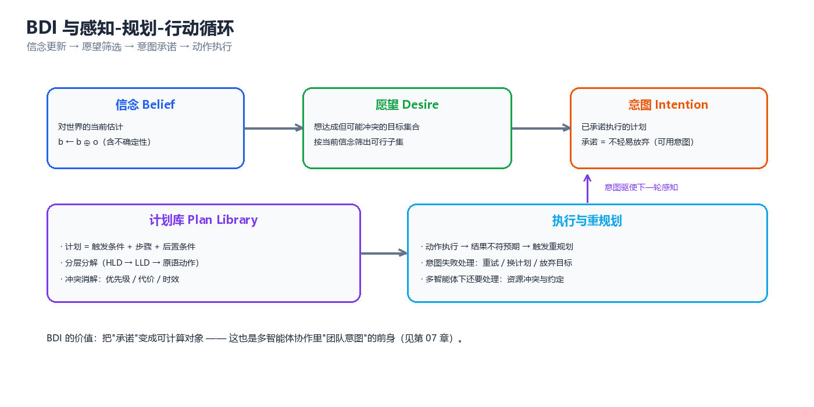
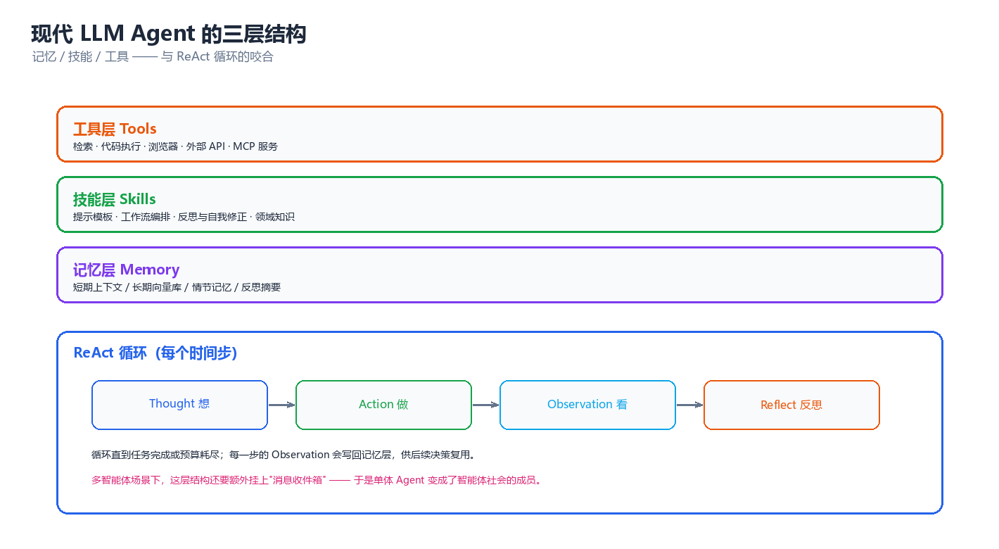

第 02 章 智能体架构
上一章解决的是"多智能体系统是什么"，这一章进入单个智能体的内部：它的观测怎么变成行动、知识存在哪里、凭什么坚持一个目标而不被一路的噪声带偏。四代架构（反应式 → 慎思式 → 混合/BDI → 语言驱动）不是四种任选的风格，而是四层针对不同时间尺度的工程答案。
一、架构的四代演化

图：反应式 → 慎思式 → 混合/BDI → 语言驱动。每一代都不是对上一代的否定，而是把上一代"败在哪里"变成新的一层。
1.1 反应式 → 慎思式 → 混合/BDI → 语言驱动
为什么会有"代际"。 一个智能体要同时满足两个矛盾的要求：对环境响应要快（毫秒级，否则撞墙），对目标追求要远（分钟到小时级，否则办不成事）。两者相差四五个数量级，任何单一机制都无法同时覆盖 —— 于是有了分层，也就有了代际。每一代都是为补上一代暴露的缺口而出现的。
第 0 代（前史）：感知-规划-行动（Sense-Plan-Act, SPA）。 Shakey（1966–1972）与 STRIPS（1971）确立的范式：感知 → 建世界模型 → 规划完整动作序列 → 逐步执行。它第一次把"目标"与"行动"用形式语言连了起来，却立刻暴露三个问题：规划耗时远大于环境变化周期、世界模型永远不完整、以及符号接地问题（symbol grounding problem）——"on(a, table)"这个符号与真实积木之间隔着一整套感知系统。
第 1 代：反应式架构（Reactive Architecture, 1986–）。 Brooks 的 Subsumption Architecture（1986）反叛 SPA：不要世界模型，不要规划。智能体只是一堆"情境-动作规则"（situation-action rule）的集合，感知直接接行动，行为分层、高层抑制低层。它赢在实时与鲁棒（没有模型，也就没有"模型错了"这回事）。
- 解决的问题：毫秒级响应、对感知噪声与部分失效的鲁棒性、极低算力需求。
- 付出的代价：无记忆、无前瞻、天然局部最优；"必须先绕远路"的任务会原地打转；涌现行为无法推理与验证。
第 2 代：慎思式架构（Deliberative Architecture, 1957–1990s）。 回到符号主义但换了工具：用一阶逻辑/PDDL（Planning Domain Definition Language）描述世界与动作，用状态空间搜索或偏序规划求动作序列，再交给执行器。STRIPS 的算子三元组 \((pre, add, del)\) 与分层任务网络（Hierarchical Task Network, HTN）构成了经典规划的技术栈。
- 解决的问题：目标导向的长期推理、可解释性（计划本身就是解释）、约束的显式表达。
- 付出的代价：框架问题（frame problem）、感知-规划-行动的延迟鸿沟、以及复杂度天花板 —— 命题 STRIPS 的规划存在问题在长度不受限时是 PSPACE-完全的。
第 3 代：混合架构与 BDI（Hybrid / BDI, 1990–）。 工程现实答案是分层：反应层管毫秒、慎思层管小时，中间用 BDI（Belief-Desire-Intention，信念-愿望-意图）做"承诺管理"。BDI 的关键洞察不是"有信念和愿望"（太普通），而是意图是一个承诺（commitment）：一旦选定某个计划，就要在相当长时间里坚持它，不会每一步都重新权衡，只有计划失败或目标达成时才重规划。这正是"不被噪声带偏"的形式化。
- 解决的问题：动态环境里兼具实时性与目标坚持；把"何时重新决策"变成可设计的问题。
- 付出的代价：两层之间的接口设计困难；信念修正（belief revision）本身就不平凡；计划库需人工编写，难以覆盖开放环境。
第 4 代：语言驱动架构（Language-Driven / LLM Agent, 2022–）。 用大语言模型（Large Language Model, LLM）替换符号推理层：世界知识不再编码为逻辑原子，而是隐含在预训练权重里；推理不再输出抽象算子，而是输出自然语言。ReAct（Reason + Act, 2022）给出"思考 → 行动 → 观察"的交错循环，Reflexion（2023）在其上加"自我反思 + 失败写记忆"，Toolformer / MCP 把外部工具接进来。
- 解决的问题：开放域任务、自然语言接口、无需人工编写领域模型、常识与语义的现成复用。
- 付出的代价：幻觉（hallucination）沿链路传染、token 成本随轮数线性增长、不可复现（采样随机性）、无形式化保证（"信念"不再逻辑封闭，也谈不上一致性）。
核心思想：四代架构的演化不是"新替代旧"，而是在时间轴上不断加层。今天一台具身智能体往往同时运行四代架构的实例：底层反应式控制器（1 kHz）、中层行为树/状态机（10 Hz）、任务级 BDI 或任务规划器（0.1 Hz）、最外层 LLM 接口（一次任务一次调用）。选型问题因此不是"用哪一代"，而是"哪一段该用哪一代"。
1.2 代际对照表
| 代际 | 代表工作（年） | 内部表示 | 解决的问题 | 主要代价 | 典型失败模式 |
|---|---|---|---|---|---|
| 反应式 | Brooks 包容架构（1986） | 情境-动作规则 | 实时性、鲁棒性、低算力 | 无记忆、无前瞻 | 绕不出障碍、行为震荡、死循环 |
| 慎思式 | STRIPS（1971）、PDDL（1998） | 逻辑原子 + 算子 | 目标导向、可解释、约束表达 | 框架问题、延迟、PSPACE | 世界模型过时、规划太慢 |
| 混合/BDI | PRS（1987）、dMARS（1996）、JACK（2001） | 信念/愿望/意图 + 计划库 | 目标坚持 + 实时反应 | 接口复杂、计划库人工维护 | 意图死锁、承诺过早、计划库缺项 |
| 语言驱动 | ReAct（2022）、Reflexion（2023） | 自然语言 + 向量记忆 | 开放域、零建模、常识复用 | 幻觉、成本、不可复现 | 幻觉传染、无限自省、成本爆炸 |
⚠️ 常见选型错误是"用最高代际解决一切"。语言驱动架构在需要严格保证的场合（资金转账、医疗剂量、工控回路）失败率显著高于前两代，因为它根本没有"保证"这个概念 —— 它的输出是一个采样结果，不是一条定理。
二、反应式架构
2.1 情境-动作规则与有限状态机
反应式智能体（reactive agent）的最小定义是：行动是当前感知的纯函数。
最朴素的形态是一张情境-动作规则表（condition-action table）：
| 情境（感知条件） | 动作 | 说明 |
|---|---|---|
| 前方有障碍 且 一侧空 | 向空侧转 | 避障规则 |
| 前方有障碍 且 两侧都堵 | 后退 | 死角处理 |
| 前方无障碍 | 前进 | 默认规则 |
| 电池低于 10% | 前往充电桩 | 资源规则（优先级最高） |
规则表的表达能力受限于感知粒度。最常见的升级是有限状态机（Finite State Machine, FSM）：引入离散内部状态 \(q \in Q\)，转移函数变成
FSM 是"带一点记忆的反应式"，在游戏 AI 与工业控制里活了三十年：
| 表示 | 记忆 | 表达能力 | 可读性 | 扩展时的痛点 | 典型工具 |
|---|---|---|---|---|---|
| 规则表 | 无 | 最低 | 高（一张表看完） | 规则数随情境组合爆炸 | 专家系统、CLIPS |
| 有限状态机 | 当前状态 | 中 | 中 | 状态数随任务数乘积爆炸 | Unity FSM、SCXML |
| 行为树（Behavior Tree） | 无（靠黑板） | 中高 | 高（树形结构） | 节点复用需要设计模式 | BehaviorTree.CPP |
| 层次状态机（HFSM） | 状态栈 | 高 | 中 | 层次设计容易过度 | Statecharts、ROS SMACH |
核心思想：反应式的本质限制不是"规则太少"，而是没有表示未来的能力。它无法回答"如果我现在这么做，三步之后会怎样"，因此任何需要牺牲眼前利益换取远期收益的任务都在它的能力边界之外。
2.2 Subsumption 架构：分层行为与优先级仲裁
Brooks 的包容架构（Subsumption Architecture）是反应式最优雅的形态，三条规则：
- 行为分层：低层处理最原始最紧急的任务（避障），高层处理更抽象的任务（探索、抓取）。
- 高层抑制（inhibit/suppress）低层：高层不需要"协调"，只需在关键时刻掐掉低层的输出。
- 没有中央世界模型：每层只订阅自己需要的传感器，层间不共享内部状态。
传感器 (sensor)
│
┌─────────────────────┼─────────────────────┐
▼ ▼ ▼
┌────────────┐ ┌────────────────┐ ┌────────────┐
│ 层 3 │ │ 层 2 │ │ 层 1 │
│ GoToGoal │ │ AvoidObstacle │ │ Wander │
│ 优先级 P=3 │ │ 优先级 P=2 │ │ 优先级 P=1 │
└─────┬──────┘ └───────┬────────┘ └─────┬──────┘
│ forward │ up / down │ wander
│ 抑制 S(3→2) ──────┘ │
│ 抑制 S(3→1) ───────────────────────────┤
│ │ 抑制 S(2→1) ───────┤
▼ ▼ ▼
┌─────────────────────────────────────────────────┐
│ 仲裁器 Arbitrator │
│ for L in [P3, P2, P1]: │
│ if L.active(s): return L.action(s) │
│ (第一个激活的层获胜, 其余全部被抑制) │
└───────────────────────┬─────────────────────────┘
▼
执行器 (actuator)
仲裁规则唯一的原则是"优先级 + 激活条件"，没有效用函数、没有博弈、没有协商。这既是它便宜的原因，也是它脆弱的根源 —— 下面这段代码把整台机器跑起来，可以直接观察"谁能拿到执行权"：
# 2.2 Subsumption 仲裁: 高优先级行为层通过抑制信号覆盖低层输出
import numpy as np
SIZE_X, SIZE_Y = 6, 3
OBSTACLES = {(2, 1), (4, 2)}
rng = np.random.default_rng(3)
class Bot:
def __init__(self):
self.pos, self.actions = (0, 1), 0
def sense(self):
x, y = self.pos
blocked = lambda p: p in OBSTACLES or p[0] >= SIZE_X or p[1] >= SIZE_Y
return {"front_blocked": blocked((x + 1, y)),
"at_goal": self.pos == (SIZE_X - 1, 1)}
def do(self, a):
x, y = self.pos
self.actions += 1
if a == "forward":
self.pos = (min(x + 1, SIZE_X - 1), y)
elif a == "up":
self.pos = (x, min(y + 1, SIZE_Y - 1))
elif a == "down":
self.pos = (x, max(y - 1, 0))
elif a == "wander":
self.pos = (x, max(y - 1, 0) if rng.random() < 0.5 else min(y + 1, SIZE_Y - 1))
def goto_goal(bot, s): # 层 3: 驱向目标
return None if (s["at_goal"] or s["front_blocked"]) else "forward"
def avoid_obstacle(bot, s): # 层 2: 避障(前向受阻时侧移)
if not s["front_blocked"]:
return None
return "down" if bot.pos[1] > 1 else "up"
def wander(bot, s): # 层 1: 闲逛(永远可激活, 优先级最低)
return "wander"
LAYERS = [(3, "GoToGoal", goto_goal), (2, "AvoidObstacle", avoid_obstacle),
(1, "Wander", wander)]
def arbitrate(bot, s):
"""从高优先级向下扫描: 第一个激活的层获胜, 其余全部被抑制"""
for i, (prio, name, fn) in enumerate(LAYERS):
act = fn(bot, s)
if act is not None:
active = [n for _, n, f in LAYERS if f(bot, s) is not None]
return name, act, [n for n in active if n != name]
return None, None, []
bot = Bot()
print(f"{'tick':>4} {'位置':<8}{'前方受阻':<10}{'获胜层':<15}{'动作':<9}被抑制的层")
for t in range(1, 12):
s = bot.sense()
if s["at_goal"]:
print(f"{t:>4} {str(bot.pos):<8}{'-':<10}{'(已达目标)':<15}{'-':<9}-")
break
name, act, suppressed = arbitrate(bot, s)
print(f"{t:>4} {str(bot.pos):<8}{str(s['front_blocked']):<10}{name:<15}{act:<9}"
f"{', '.join(suppressed) if suppressed else '-'}")
bot.do(act)
print(f"\n共执行 {bot.actions} 个动作; 各行为层只通过抑制信号耦合, 不共享内部状态")
# 预期输出:
# tick 位置 前方受阻 获胜层 动作 被抑制的层
# 1 (0, 1) False GoToGoal forward Wander
# 2 (1, 1) True AvoidObstacle up Wander
# 3 (1, 2) False GoToGoal forward Wander
# 4 (2, 2) False GoToGoal forward Wander
# 5 (3, 2) True AvoidObstacle down Wander
# 6 (3, 1) False GoToGoal forward Wander
# 7 (4, 1) False GoToGoal forward Wander
# 8 (5, 1) - (已达目标) - -
#
# 共执行 7 个动作; 各行为层只通过抑制信号耦合, 不共享内部状态
注意第 2、5 行发生了真实的行为切换：避障层只在前方受阻那一拍激活，一旦激活就立刻接管执行权，目标层被"沉默"而非被"说服"。这就是包容架构的全部机制 —— 它是切换，不是协商。
2.3 何时失效：需要长期规划的场景
反应式有一个精确的能力边界：它只能实现"当前感知到行动"的可测函数，而任何需要承诺的任务都不能表示为这样的函数。 下面三条中任一条成立，就说明反应式不够用：
判据有三条：最优动作依赖于尚未出现的未来事件（"先充电再出车"，因为充电桩 20 分钟后才空闲）、需要区分感知上完全相同的两个状态（已投递与未投递的包裹）、存在局部最优陷阱（局部规则把智能体稳定在永远到不了目标的吸引子上）。
| 场景 | 反应式够用吗 | 理由 |
|---|---|---|
| 扫地机器人沿墙清扫 | ✅ 够用 | 无承诺需求，避障即全部任务 |
| 游戏 NPC 的巡逻与追击 | ✅ 够用 | 行为树/FSM 已能覆盖，状态可枚举 |
| 无人机穿越狭窄通道 | ✅ 够用（+ 稳定控制器） | 局部避障就是全部问题 |
| 多机器人协作搬运（顺序有约束） | ❌ 不够 | 需要承诺"我先到位等你" |
| 跨天任务（预约、物流、报销） | ❌ 不够 | 需要状态记忆与长期目标 |
| 需要解释"你为什么这么做" | ❌ 不够 | 涌现行为无法反向推理 |
⚠️ 反应式最危险的失效模式是行为振荡（behavior oscillation）：两个同优先级的规则交替激活，智能体在两格之间来回移动。它不报错、不崩溃，只永远做无用功 —— 线上表现为"任务一直不结束"，极难定位。
三、慎思式架构
3.1 符号表示与 STRIPS/PDDL 规划
慎思式架构（deliberative architecture）的核心假设：世界可以用符号系统显式表示，行动效果可以精确预测。三条支柱：
- 状态表示：世界状态 \(s\) 是原子（atom）的集合，例如 \(\{\text{on}(a,\text{table}),\ \text{clear}(b),\ \text{handempty}\}\)。这是封闭世界假设（closed-world assumption）：没写的都是假的。
- 动作表示：算子（operator）写成三元组 \(\text{op} = (pre, add, del)\)，即可执行条件是 \(pre \subseteq s\)，执行后 \(s' = (s \setminus del) \cup add\)。这个"加/删"模型也是默认推理（default reasoning）的第一种形态。
- 规划问题：给定初始状态 \(s_0\) 与目标集合 \(g\)，求动作序列 \(\pi = \langle a_1, \dots, a_n \rangle\) 使执行后 \(g \subseteq s_n\)。
从 STRIPS 到 PDDL 的升级主要是表达力：PDDL 引入类型、谓词、量词、数值流（increase/decrease）、条件效果（when）与派生谓词，使"燃料量"这类连续量也能统一建模。同一段领域知识的两种写法：
;; STRIPS 风格(1971): 只有 前提/添加/删除
(operator stack
(params (?x ?y))
(precondition (and (holding ?x) (clear ?y)))
(effect (and (on ?x ?y) (clear ?x) (handempty)
(not (holding ?x)) (not (clear ?y)))))
;; PDDL 2.1 风格: 有类型、数值与条件效果
(:action drive
:parameters (?t - truck ?from - location ?to - location)
:precondition (and (at ?t ?from) (road ?from ?to) (>= (fuel ?t) (distance ?from ?to)))
:effect (and (not (at ?t ?from)) (at ?t ?to)
(decrease (fuel ?t) (distance ?from ?to))
(when (= (fuel ?t) 0) (not (can-move ?t)))))
四种主流"符号化任务表示"的对比：
| 表示 | 表示不了什么 | 求解方式 | 适用场景 | 代表系统 |
|---|---|---|---|---|
| STRIPS | 条件效果、数值 | 状态空间搜索 | 教学与原型 | STRIPS、Shakey |
| PDDL | 不确定性、连续动态 | 规划器 | 物流、调度、机器人任务级 | Fast Downward、LAMA |
| HTN（分层任务网络） | 不擅长"从零发现方法" | 任务分解（自上而下） | 有成熟 SOP 的工业流程 | SHOP2 |
| POMDP（部分可观测 MDP） | 表达不了高层符号结构 | 信念状态上的值迭代 | 感知不确定的真实任务 | POMDP-solve、DESPOT |
3.2 前向/后向搜索与启发式
规划的本质是在巨大的图上找路。搜索方向的差别很大：
| 搜索方向 | 展开对象 | 分支因子 | 优点 | 缺点 | 典型启发式 |
|---|---|---|---|---|---|
| 前向（forward / progression） | 从 \(s_0\) 出发的状态 | 大 | 易剪枝（无效动作不展开） | 目标不敏感 | \(h_{add}\)、\(h_{FF}\)、\(h_{max}\) |
| 后向（backward / regression） | 从 \(g\) 出发的子目标集 | 小 | 只看相关动作 | 需处理前提交互 | 相关动作集合 |
| 双向 | 两端同时 | — | 视情况最优 | 相遇判定昂贵 | — |
| 分层（HTN） | 任务网络 | — | 直接复用人类 SOP | 需要专家写方法库 | — |
启发式的核心思想是"松弛"（relaxation）：把原问题变简单一点，用简单问题的最优解当原问题的下界：
"松弛"通常指忽略删除效果（delete-relaxation）：假设动作只会让世界变好、不会破坏已成立的事实。忽略删除效果后规划变成多项式时间可解（这正是 \(h_{add}\) 与 \(h_{FF}\) 可计算的原因），而原问题依然困难 —— 这个"难度差"正好被拿来当启发式。下面是一个完整可跑的 STRIPS 规划器（A* + 未满足目标原子计数）：
# 3.2 前向状态空间搜索的 STRIPS 规划器: A* + "未满足目标原子数"启发式
import heapq
BLOCKS = ["a", "b", "c"]
def actions_of(state):
"""枚举当前状态下所有可赋值的算子(地面化 STRIPS 算子): (名字, 添加, 删除)"""
out = []
for x in BLOCKS:
if {f"on({x},table)", f"clear({x})", "handempty"} <= state:
out.append((f"pick-up({x})", {f"holding({x})"},
{f"on({x},table)", f"clear({x})", "handempty"}))
if f"holding({x})" in state:
out.append((f"put-down({x})", {f"on({x},table)", f"clear({x})", "handempty"},
{f"holding({x})"}))
for y in BLOCKS:
if x == y:
continue
if {f"holding({x})", f"clear({y})"} <= state:
out.append((f"stack({x},{y})", {f"on({x},{y})", f"clear({x})", "handempty"},
{f"holding({x})", f"clear({y})"}))
if {f"on({x},{y})", f"clear({x})", "handempty"} <= state:
out.append((f"unstack({x},{y})", {f"holding({x})", f"clear({y})"},
{f"on({x},{y})", f"clear({x})", "handempty"}))
return out
def h_unsat(state, goal):
"""启发式: 目标里尚未满足的原子个数(简单, 不保证可采纳, 但直观)"""
return sum(1 for g in goal if g not in state)
def astar(init, goal):
init, goal = frozenset(init), frozenset(goal)
tie, counter = 0, 0
frontier = [(h_unsat(init, goal), 0, tie, init, [])]
best, expanded = {init: 0}, 0
while frontier:
_, g, _, state, plan = heapq.heappop(frontier)
if goal <= state:
return plan, expanded
if g > best.get(state, 1 << 30):
continue
expanded += 1
for name, add, dele in actions_of(state):
nxt = frozenset((set(state) - dele) | add)
if g + 1 < best.get(nxt, 1 << 30):
best[nxt] = g + 1
counter += 1
heapq.heappush(frontier,
(g + 1 + h_unsat(nxt, goal), g + 1, counter, nxt, plan + [name]))
return None, expanded
init = ["on(a,table)", "on(b,table)", "on(c,table)",
"clear(a)", "clear(b)", "clear(c)", "handempty"]
goal = ["on(b,a)", "on(c,b)"]
plan, expanded = astar(init, goal)
print("初始状态:", sorted(init))
print("目标状态:", sorted(goal))
print(f"搜索展开节点数 = {expanded} | 最短动作数 = {len(plan)}")
for i, a in enumerate(plan, 1):
print(f" {i}. {a}")
# 预期输出:
# 初始状态: ['clear(a)', 'clear(b)', 'clear(c)', 'handempty', 'on(a,table)', 'on(b,table)', 'on(c,table)']
# 目标状态: ['on(b,a)', 'on(c,b)']
# 搜索展开节点数 = 12 | 最短动作数 = 4
# 1. pick-up(b)
# 2. stack(b,a)
# 3. pick-up(c)
# 4. stack(c,b)
只展开 12 个节点就找到 4 步解，看起来规划很轻松。但把积木数从 3 改成 30：状态空间从 \(2^{15}\) 级别跳到 \(10^{40}\) 级别，同样的代码一辈子跑不完 —— 这就是下一节的复杂度天花板。
3.3 框架问题、计算复杂度与可扩展性天花板
慎思式架构有三个著名的理论困难，它们不是工程细节，而是范式自带的：
（1）框架问题（frame problem）。 世界时刻在变，但绝大多数事实在任一动作前后保持不变。逻辑若想推理"我现在能做什么"，就必须显式声明哪些东西没有变。STRIPS 用 \(del\) 集合部分解决了它（没删的就是没变），代价是引入默认推理；用纯一阶逻辑表达则需为每个动作写 \(|F|\) 条框架公理（\(F\) 为事实总数）。
（2）资格问题（qualification problem）。 没有任何规则能穷举一次动作会失败的所有原因。计划"去厨房煮咖啡"隐含假设了两百个条件（门没锁、没停电、机器有豆……），写全是不可能的，所以任何形式化计划在执行时都必须默认"其他条件不变"（ceteris paribus）—— 这正是它会被现实打败的地方。
（3）钳制问题（ramification problem）。 一个动作的间接后果可能无限延伸（动了砖块 → 灰尘落下 → 传感器误读 → 任务重规划）。显式建模所有间接效果会引入比直接效果多得多的公理。
复杂度结论与它的工程含义（只记结论，不展开证明）：
| 问题 / 症状 | 复杂度 | 工程绕法 |
|---|---|---|
| 命题 STRIPS 的规划存在性 | PSPACE-完全（Bylander, 1994） | HTN/宏动作复用人类 SOP |
| 有界长度的命题规划（长度 ≤ k） | NP-完全（SAT 规划器的基础） | 限定规划长度 + 增量重规划 |
| 无删除效果的松弛问题 | 多项式（\(h_{add}/h_{FF}\) 可计算的原因） | 用它当下界，别当解 |
| 数值 PDDL 规划（含无界计数） | 不可判定 | 给计数加上界或离散化 |
| 一阶逻辑可满足性 | 半可判定（需先地面化） | 控制对象数量 \(O(n^k)\) |
| 执行时计划瞬间失效 | ——（资格问题） | 执行监控 + 快速重规划（replanning） |
| 感知事实无法映射成原子 | ——（符号接地问题） | 感知层输出符号摘要而非原始信号 |
核心思想：慎思式的困难不是"算法不够好"，而是"问题本身就在 PSPACE 里"。复杂度结果说的是"这个问题没有捷径"，唯一出路是换一个更弱的问题：HTN 复用人类知识、反应层兜底、或者把推理外包给不保证正确但便宜的 LLM。
四、混合架构与 BDI

图：信念（Belief）、愿望（Desire）、意图（Intention）三要素与感知-规划-行动循环的对应关系。
4.1 信念/愿望/意图三要素
BDI 是 Bratman 的实践哲学（Intention, Plans, and Practical Reason, 1987）在 AI 里的工程化，它回答一个很实际的问题：一个人为什么不会在每次过马路时重新权衡"要不要去上班"？ Bratman 的答案是多了一个中间层 —— 意图：
- 信念（Belief, \(B\)）：智能体对世界"是什么样"的认识，可能是错的，会随感知更新。
- 愿望（Desire, \(D\)）：智能体"想成为事实"的状态，通常互相冲突（既想省时又想省钱）。
- 意图（Intention, \(I\)）：已承诺去实现的愿望，是愿望与计划之间的桥。核心特征是承诺：意图一旦形成就有了惯性，不会因出现稍优选项就立刻被抛弃。
三者的差别全在动力学上：
| 维度 | 信念 Belief | 愿望 Desire | 意图 Intention |
|---|---|---|---|
| 语义 | 世界是怎样的 | 世界应该怎样（选项集） | 智能体将要做什么 |
| 有无真值 | 有（可真可假） | 无（是偏好） | 无（是承诺） |
| 冲突处理 | 必须一致（否则修正） | 允许并存、允许冲突 | 一般要求两两一致 |
| 更新方式 | 感知驱动的信念修正 | 出现/衰减（受动机影响） | 承诺保护：默认不变 |
| 与行动的关系 | 间接（仅提供约束） | 无（未承诺的愿望不驱动行动） | 直接（意图栈顶就是当前行为） |
| 放弃的代价 | 低 | 低 | 高（要考虑已投入资源） |
| 对应 LLM Agent 里的什么 | 上下文/记忆/工具返回值 | 任务列表、用户目标 | 当前执行的计划 + 不再改主意的锁定 |
这种"意图有惯性"在数学上叫承诺的不可逆性（irrevocability）：放弃一个意图需要理由（失败、被更高优先级取代、资源耗尽），而形成意图只需要"它服务于某个未被满足的愿望"。
4.2 意图的承诺与重规划
承诺不是"全有或全无"。三种承诺强度是 BDI 系统最重要的设计旋钮：
| 承诺强度 | 定义 | 何时重规划 | 优点 | 风险 |
|---|---|---|---|---|
| 盲目承诺（blind） | 只要没成功就一直做 | 从不（只在成功时停） | 最简单、最可预测 | 目标不可达时永久卡死 |
| 单心承诺（single-minded） | 相信目标仍可达就坚持 | 信念表明目标不可达时 | 兼顾坚持与生存 | "不可达"很难判准 |
| 开放承诺（open-minded） | 有更合适的计划就换 | 出现更优计划或代价过高时 | 灵活、适应性强 | 失去坚持优势，易被噪声带偏 |
重规划的触发条件是 BDI 的核心工程知识，一般四类：计划失败（动作返回失败）、计划不可能（信念更新发现前置被破坏）、目标已实现或已失效、意图冲突（资源或效果冲突）。
对应到数据结构，BDI 的执行引擎是一台意图栈机器：栈底是长期承诺，栈顶是当前正在做的事；遇到子目标压栈，完成后弹栈，失败则把该计划标记为"已失败"并在同一目标上换一个计划重压：
意图栈 (Intention Stack)
┌───────────────────────────────────────────────────────┐
│ [栈底] Goal: delivered │
│ Plan: P_deliver pc=1/3 ← 长期承诺, 不轻易放弃│
├───────────────────────────────────────────────────────┤
│ [栈顶] Goal: coffee_in_hand │
│ Plan: P_repair_then_brew pc=2/5 │
│ (先前的 P_brew 已标记 failed, 不再复用) │
└───────────────────────────────────────────────────────┘
按键 4.2 的四类触发条件: │
· 动作失败 ──────────────────────────────┘
· 前置被破坏 → 弹出当前计划, 在同一目标上重新选择计划
· 目标已达成 → 正常弹栈, 继续父计划的下一步
· 与已有意图冲突 → 比较优先级/代价, 低者让路或整体放弃
核心思想：BDI 最有价值的不是那三个词，而是把"什么时候重新考虑"变成一个显式设计的问题。每一步都重新规划（ReAct 的默认行为）在开放环境里又慢又不稳定；从不重新规划（盲目承诺）在动态环境里会撞死。BDI 的全部工程技巧都在这个旋钮上。
4.3 计划库与冲突消解
BDI 智能体不"从零推理出计划"，而是从计划库里选计划。一条计划（plan）由三部分组成：
- 触发（trigger）：服务于哪个目标/事件（例如
+!deliver_coffee）。 - 上下文（context）：前提条件（belief formula），例如
not machine_broken。 - 主体（body）：动作序列，动作可以是基本动作，也可以是子目标（
!sub_goal）。
好处是推理从"搜索"退化成"匹配"（因此极快、可实时），且计划可被人读懂审核；坏处是计划库缺项 = 智能体能力缺失，这是 BDI 系统最常见的线上故障。当多个计划同时可选时，需要冲突消解（conflict resolution）：
| 冲突消解策略 | 规则 | 优点 | 缺点 | 典型实现 |
|---|---|---|---|---|
| 优先级序 | 每个目标带静态优先级 | 简单、可预测 | 优先级需人工维护 | PRS、JACK |
| 代价序 | 选预计代价最小的计划 | 经济性好 | 代价估计不可靠 | dMARS |
| 新意图优先 | 后到的事件抢占 | 反应灵敏 | 容易"目标漂移" | AgentSpeak 默认 |
| 否决制（veto） | 已有意图可否决新意图 | 保护长期承诺 | 可能错过重要事件 | IRMA |
| 资源预算 | 按剩余预算分配 | 适合有成本的任务 | 预算估计困难 | 现代 LLM 编排常用 |
4.4 经典实现与今日等价物
| 经典系统 | 年份 | 特点 | 今日等价物 | 继承了什么 |
|---|---|---|---|---|
| PRS（Procedural Reasoning System） | 1987 | 第一个实用 BDI 解释器 | LangGraph 状态图 + 检查点 | 显式计划 + 状态可恢复 |
| dMARS | 1996 | 分布式、可扩展 | AutoGen / CrewAI | 事件驱动的多主体承诺 |
| JACK | 2001 | Java 工业级、带验证工具 | BehaviorTree.CPP | 可组合的技能节点 |
| Jason / AgentSpeak(L) | 2007 | 开源、逻辑清晰、教学首选 | 提示模板 + 技能库 | 触发-上下文-主体三元组 |
| GAMA / NetLogo | 2010s | 大规模社会仿真 | Generative Agents 类社会仿真 | 大量主体的信念更新 |
⚠️ 常见误解是"LLM Agent 是全新的东西"。把 ReAct 循环与 BDI 并排看，结构几乎逐项对应，真正的变化只有一个：信念不再是一个逻辑封闭的原子集合，而是一段可能自相矛盾的自然语言上下文（见 5.4）。这既带来表达力的暴涨，也带来所有形式化保证的丧失。
五、现代 LLM Agent 架构

图：记忆层 / 技能层 / 工具层三层结构，以及底下驱动的 ReAct（思考-行动-观察）循环。
5.1 三层结构：记忆/技能/工具
LLM Agent 的工程实现几乎都收敛到同一个三层结构（不同框架叫法不同，但分层一一对应）：
三层的职责与失败模式几乎一一对应：
| 层 | 职责 | 常见实现 | 失败模式 | 缓解手段 |
|---|---|---|---|---|
| 记忆层 | 提供"不在提示里但必须知道"的信息 | 上下文窗口、向量库（RAG）、情节日志、摘要 | 检索到无关记忆、上下文被污染、超窗截断 | 混合检索 + 时间衰减、显式遗忘（5.3） |
| 技能层 | 提供"怎么做"的过程性知识 | 提示模板、few-shot、子计划、SOP | 技能缺失、技能选错、示例误导 | 技能检索 + 执行后校验 |
| 工具层 | 提供"改变世界"的能力 | 函数调用、MCP、代码沙箱、检索器 | 参数幻觉、越权调用、超时、非幂等 | schema 校验 + 沙箱 + 幂等重试 |
| 推理内核 | 在三者基础上做决策 | 单个 LLM，或多角色模拟 | 幻觉、无限自省、跳过验证 | 结构化输出 + 校验节点 + 步数上限 |
核心思想：三层结构之所以稳定，是因为它把"不确定性"关在推理内核里，而把记忆、技能、工具都做成确定性接口。凡能用检索解决的，就不要让模型"想起来"；凡能用磁盘解决的，就不要放进上下文。
5.2 ReAct 与 Reflexion 循环的区别
两个名字常被混用，但循环结构完全不同：
- ReAct（Reason + Act, Yao et al., 2022）在单次任务内交错进行推理轨迹与动作执行，循环体是
Thought → Action → Observation，终止条件是任务完成或步数上限。它解决"LLM 不知道自己的知识何时过时"：让模型主动调用工具获取观察，把"猜"变成"看"。 - Reflexion（Shinn et al., 2023）在多次尝试之间加一层自我反思，循环体是
尝试 → 评估 → 反思 → 写入记忆 → 下一次尝试。它解决"同一个错误反复犯"：不改进权重，只改进提示里的教训（verbal reinforcement learning）。
| 对比维度 | ReAct | Reflexion |
|---|---|---|
| 循环层级 | 任务内部（步内） | 任务之间（尝试间） |
| 循环体 | Thought → Action → Observation | Attempt → Evaluate → Reflect → 记忆 |
| 学习发生在哪 | 不学习（当次上下文内适应） | 写入长期反思记忆（跨任务复用） |
| 终止条件 | 任务完成 / 步数上限 | 评估通过 / 尝试次数上限 |
| 成本 | \(O(T)\) 次 LLM 调用（\(T\) 为步数） | \(O(K \times T)\)（\(K\) 为尝试次数） |
| 失败模式 | 死循环、工具误用 | 反复总结却毫无实质改变（空反思） |
⚠️ Reflexion 有一个隐蔽的失效模式：反思可能"总结出一个错误的因果归因"，然后把错误永久写进记忆，让后续所有尝试都沿错误方向走。这也是"记忆需要遗忘策略"的最强理由。
5.3 记忆机制：向量库、情节记忆、反思摘要、遗忘策略
按认知科学的分类法（Tulving 的划分）组织：
| 记忆类型 | 类比 | 存什么 | 存储方式 | 生命周期 |
|---|---|---|---|---|
| 工作记忆 | 短期记忆 | 当前任务上下文 | 上下文窗口 | 单次会话 |
| 情节记忆（episodic） | 经历 | "第 3 步做过什么、结果如何" | 追加式日志 | 任务级到天级 |
| 语义记忆（semantic） | 知识 | 事实、偏好、实体关系 | 向量库 / 图数据库 | 长期 |
| 程序性记忆（procedural） | 技能 | 提示模板、SOP、代码片段 | 文件 / 技能库 | 长期，需版本管理 |
| 反思记忆（reflective） | 教训 | "上次为什么失败" | 向量库 + 标签 | 长期，需定期清理 |
检索的本质是一个打分排序问题，最常用的联合打分是"相似度 × 新鲜度"：
其中 \(\Delta t_m\) 是记忆 \(m\) 的年龄，\(\tau\) 是衰减时间常数（越大忘得越慢），\(\text{imp}_m\) 是重要性权重（Generative Agents 用 LLM 给每条记忆打 1–10 分）。三个因子缺一不可：只按相似度检索会反复捞出过期结论，只按新鲜度检索会捞出一堆无关琐事。
遗忘策略（forgetting）不是"省存储"，而是防止错误被固化：
| 遗忘策略 | 规则 | 适用 | 风险 |
|---|---|---|---|
| 时间衰减 | \(\text{keep} = e^{-\Delta t/\tau}\) | 快速变化的事实（股价、排班） | 长周期规律被误删 |
| 容量淘汰 | 保留 top-\(K\) / LRU | 上下文预算紧张 | 淘汰正在被依赖的记忆 |
| 冲突覆盖 | 新事实覆盖旧事实（带版本） | 实体属性更新 | 覆盖错误无法回滚 |
| 显式失效 | 反思得出"此路不通"后打标记 | 失败复盘 | 需要标签体系 |
下面的代码把"相似度 × 衰减"的联合打分与阈值过滤完整实现一遍（用词袋向量代替真实嵌入模型，便于复现）：
# 5.3 记忆检索: 向量相似度 + 时间衰减(遗忘) 的联合打分
import numpy as np
VOCAB = ["咖啡", "机器", "坏了", "扳手", "修理", "厨房", "老板", "报告",
"数据", "图表", "会议", "存档"]
def embed(tokens):
"""把词袋转成归一化向量(真实系统里换成嵌入模型的输出)"""
v = np.array([tokens.count(w) for w in VOCAB], dtype=float)
n = np.linalg.norm(v)
return v / n if n else v
MEM = [ # (文本, 词袋, 距今多少天)
("咖啡机坏了, 需要扳手才能修", ["咖啡", "机器", "坏了", "扳手"], 1),
("上周用扳手修过厨房的机器", ["扳手", "修理", "厨房", "机器"], 9),
("老板要一份上周销售数据报告", ["老板", "报告", "数据"], 3),
("会议纪要里的图表已存档", ["会议", "图表", "存档"], 30),
("厨房在四楼, 咖啡机在厨房", ["厨房", "咖啡"], 12),
("机器故障时先断电再修理", ["机器", "坏了", "修理"], 45),
]
QUERY = ["机器", "坏了", "怎么", "修理"] # 查询词袋(先切词再嵌入)
TAU = 14.0 # 遗忘时间常数: 14 天衰减到 1/e
THRESHOLD = 0.15 # 低于该相似度直接丢弃
q = embed(QUERY)
print(f"查询向量非零维度: {[VOCAB[i] for i in np.nonzero(q)[0]]}\n")
print(f"{'记忆':<22}{'相似度':>8}{'保留率':>9}{'总分':>9} 判定")
ranked = []
for text, tokens, age in MEM:
sim = float(q @ embed(tokens))
keep = float(np.exp(-age / TAU))
ranked.append((sim * keep, sim, keep, text))
for score, sim, keep, text in sorted(ranked, reverse=True):
if sim < THRESHOLD:
verdict = "丢弃(不相关)"
elif keep < 0.1:
verdict = "丢弃(过期)"
elif score >= 0.2:
verdict = "保留 -> 写入上下文"
else:
verdict = "降级(仅作候选)"
print(f"{text:<22}{sim:>8.3f}{keep:>9.3f}{score:>9.3f} {verdict}")
ctx = [t for s, sim, k, t in sorted(ranked, reverse=True) if s >= 0.2]
print(f"\n最终进入上下文的记忆条数: {len(ctx)}")
for t in ctx:
print(f" - {t}")
# 预期输出:
# 查询向量非零维度: ['机器', '坏了', '修理']
#
# 记忆 相似度 保留率 总分 判定
# 咖啡机坏了, 需要扳手才能修 0.577 0.931 0.538 保留 -> 写入上下文
# 上周用扳手修过厨房的机器 0.577 0.526 0.304 保留 -> 写入上下文
# 机器故障时先断电再修理 1.000 0.040 0.040 丢弃(过期)
# 老板要一份上周销售数据报告 0.000 0.807 0.000 丢弃(不相关)
# 厨房在四楼, 咖啡机在厨房 0.000 0.424 0.000 丢弃(不相关)
# 会议纪要里的图表已存档 0.000 0.117 0.000 丢弃(不相关)
#
# 最终进入上下文的记忆条数: 2
# - 咖啡机坏了, 需要扳手才能修
# - 上周用扳手修过厨房的机器
注意第 3 行"机器故障时先断电再修理"：它是相似度最高（1.000）的一条，却因 45 天的时间衰减只拿到 0.040 的总分而被丢弃。这正是遗忘策略的价值 —— 相关但过期的知识往往比无关知识更危险，因为它听起来完全正确。
5.4 与 BDI 的对应关系
把 LLM Agent 与 BDI 逐项对齐，会看到一个惊人的同构关系，以及一个决定性的差异：
| BDI 要素 | LLM Agent 中的对应物 | 相同点 | 关键差异 |
|---|---|---|---|
| 信念 \(B\) | 上下文窗口 + 检索到的记忆 + 工具返回 | 都是"智能体以为的世界" | BDI 信念逻辑封闭（可推出蕴含式）；LLM 上下文不封闭，甚至内部矛盾 |
| 愿望 \(D\) | 用户目标、任务列表、采样出的候选 | 都可能互相冲突 | BDI 愿望集合稳定；LLM 的"愿望"每步都在重采样 |
| 意图 \(I\) | 当前执行的计划 + 锁定的目标 | 都起"承诺"作用 | BDI 意图有显式承诺语义与失败判定；LLM 承诺弱，长上下文里易漂移 |
| 计划库 | 提示模板 + 技能库 + few-shot 示例 | 都是"匹配而非搜索" | BDI 计划库可枚举可验证；LLM 技能在权重里，不可枚举、不可验证 |
| 感知 | 工具调用返回值、环境观测 | 都更新信念 | BDI 感知事件触发显式信念修正；LLM 把观测直接拼进上下文 |
| 信念修正 | 依赖删除/重规划 | 都因失败而重规划 | BDI 有明确修正逻辑；LLM 依赖"模型自己注意到矛盾"，常常注意不到 |
| 推理机制 | 一阶逻辑 / 模态逻辑 | — | LLM 把符号推理层整体换成了自然语言推理 |
核心思想：BDI 与 LLM Agent 的差别可以压缩成一句话 —— BDI 用逻辑保证一致性，LLM Agent 用语言换取表达力。BDI 能证明"意图集合一致"，LLM 不能；但 LLM 能处理"把这周的报销流程走完，顺便看看有没有能报销的团建"这种连谓词都写不出来的任务。所以现代实践倾向于混合：用 LLM 做没有形式化的那一层，用确定性代码/状态机/BDI 引擎做需要保证的那一层（执行、校验、承诺）。
六、架构选型
6.1 五维选型表
选型的正确姿势不是"哪个先进用哪个"，而是先把五个维度的需求写下来：延迟敏感度、计算资源、可解释性要求、开放域程度、是否需要承诺。
| 架构 | 延迟（能否 <10 ms） | 计算资源 | 可解释性 | 开放域适应度 | 承诺能力 | 综合定位 |
|---|---|---|---|---|---|---|
| 反应式 / 包容架构 | ✅ 极好（微秒–毫秒） | 极低（MCU 可跑） | ⚠️ 低（涌现行为难解释） | ❌ 差（规则手写） | ❌ 无 | 底层控制器、安全兜底 |
| 有限状态机 / 行为树 | ✅ 好（毫秒） | 低 | ✅ 好（结构即文档） | ⚠️ 中（需显式建状态） | ⚠️ 弱（靠黑板记） | 中层的任务编排 |
| 慎思式（STRIPS/PDDL） | ❌ 差（秒–小时） | 中到高（搜索） | ✅ 极好（计划即解释） | ❌ 差（必须可建模） | ✅ 强（计划是全局的） | 有成熟模型的调度问题 |
| 混合 / BDI | ✅ 好（反应层兜底） | 中 | ✅ 好（意图栈可读） | ⚠️ 中（计划库定上限） | ✅ 强（承诺语义显式） | 动态环境 + 长期任务 |
| LLM Agent（ReAct） | ❌ 差（0.5–10 s/步） | 高（GPU/API 成本） | ⚠️ 中（叙述可信度存疑） | ✅ 极好（零建模） | ⚠️ 弱（长程易漂移） | 开放域、人机接口、原型 |
把这五个维度填成一个需求向量，就能直接对照上表圈出候选架构；下一节的决策树给出按硬约束排序的判定顺序。
6.2 决策流程（文字版决策树）
按顺序回答下面 7 个问题，第一个"是"就决定架构（问题按"越靠前越是硬约束"排列）：
- 是否存在不可让步的实时约束（<10 ms）？ 是 → 反应式层（包容架构 / PID / 硬编码安全规则），并必须为更高层设计"紧急接管"接口。否 → 下一步。
- 任务状态空间是否小、可枚举、转移可写？ 是 → 有限状态机或行为树（可读性最好，团队协作成本最低）。否 → 下一步。
- 领域模型是否稳定、可写出算子与前提（能表达成 PDDL）？ 是 → 慎思式规划（PDDL/HTN），并配一个反应层兜底感知延迟。否 → 下一步。
- 必须长期坚持同一目标（承诺），而环境又在持续变化？ 是 → 混合/BDI：反应层负责毫秒级生存，BDI 迭代负责"不轻易改变主意"。否 → 下一步。
- 任务是开放域（无法穷举状态、需要常识与语言）？ 是 → LLM Agent（ReAct 为主循环）。否 → 回到第 2 步重审（通常说明维度判断有误）。
- 失败代价是否高（钱、安全、法律）？ 是 → 在 LLM 外包一层确定性校验（schema 校验 + 沙箱 + 人工确认 + 幂等），不要让模型直接落到副作用上。否 → 直接用 ReAct。
- 是否要求可复现与可审计？ 是 → 固定模型版本、temperature=0、记录完整轨迹（Thought/Action/Observation 全量）、给每个动作加显式前置条件检查 —— 本质上就是把 BDI 的信念-意图结构外置到代码里。
⚠️ 最省事的反模式是"先上 LLM Agent，不行再加约束"。正确顺序恰好相反：先把能确定的部分确定下来（状态机/规则/校验），只在剩下的开放缝隙里用 LLM。这与第 08 章一致：LLM 编排的失败大多来自"本该确定的地方用了模型"。
七、实现案例
7.1 从零实现一个最小 BDI 智能体
任务：智能体在大厅，要把一杯咖啡送到办公室老板手里；咖啡机其实是坏的，而智能体一开始错误地相信它是好的。这个设定同时考验信念修正、意图栈与重规划。
# 7.1 最小 BDI 智能体: 信念字典 + 计划库 + 意图栈 + 失败重规划
# 场景: 智能体在大厅, 要把一杯咖啡送到办公室的老板手里; 咖啡机其实是坏的。
GRID = {"lobby": (0, 0), "storeroom": (0, 4), "kitchen": (4, 4), "office": (4, 0)}
WORLD = {"machine_broken": True} # 环境真值: 智能体一开始并不知道
STATS = {"primitive_calls": 0, "move_steps": 0, "plan_selections": 0, "replans": 0}
TRACE = []
def hops(a, b):
(x1, y1), (x2, y2) = GRID[a], GRID[b]
return abs(x1 - x2) + abs(y1 - y2)
# ---------- 基本动作: 返回 (是否成功, 观察到的信念修正) ----------
def move_to(B, target):
d = hops(B["pos"], target)
B["pos"] = target
STATS["move_steps"] += d
TRACE.append(f" move_to({target}) 走了 {d} 步 -> 现在在 {target}")
return True, {}
def take_wrench(B, _):
if B["pos"] != "storeroom":
return False, {}
B["has_wrench"] = True
TRACE.append(" take_wrench() 拿到扳手")
return True, {}
def repair(B, _):
if B["pos"] != "kitchen" or not B["has_wrench"]:
return False, {}
WORLD["machine_broken"] = False
TRACE.append(" repair() 咖啡机修好了")
return True, {"machine_broken": False}
def brew(B, _):
if WORLD["machine_broken"]:
TRACE.append(" brew() 失败! 机器是坏的")
return False, {"machine_broken": True} # 观察 -> 信念修正
TRACE.append(" brew() 煮好一杯咖啡")
return True, {"coffee_in_hand": True}
def hand_over(B, _):
if not B["coffee_in_hand"] or B["pos"] != "office":
return False, {}
TRACE.append(" hand_over() 咖啡交到老板手里")
return True, {"delivered": True}
ACTIONS = {"move_to": move_to, "take_wrench": take_wrench, "repair": repair,
"brew": brew, "hand_over": hand_over}
# ---------- 计划库: 目标 -> [(计划名, 上下文条件, 步骤)] ----------
# 步骤形如 ("prim", 动作名, 参数) 或 ("goal", 子目标)
PLAN_LIBRARY = {
"delivered": [
("P_deliver", lambda B: True,
[("goal", "coffee_in_hand"), ("prim", "move_to", "office"),
("prim", "hand_over", None)]),
],
"coffee_in_hand": [
("P_brew", lambda B: not B["machine_broken"],
[("prim", "move_to", "kitchen"), ("prim", "brew", None)]),
("P_repair_then_brew", lambda B: B["machine_broken"],
[("prim", "move_to", "storeroom"), ("prim", "take_wrench", None),
("prim", "move_to", "kitchen"), ("prim", "repair", None),
("prim", "brew", None)]),
],
}
B = {"pos": "lobby", "machine_broken": False, # 初始信念(错误的): 机器是好的
"has_wrench": False, "coffee_in_hand": False, "delivered": False}
failed = set() # 已失败的计划名, 不再重选
stack = [] # 意图栈
def select_plan(goal, B):
for name, ctx, steps in PLAN_LIBRARY.get(goal, []):
if name in failed: # 承诺过的失败计划不重复选
continue
if ctx(B): # 上下文条件 = 计划前提
STATS["plan_selections"] += 1
return name, steps
return None, None
def push_goal(goal, B):
name, steps = select_plan(goal, B)
if name is None:
return False
TRACE.append(f"[意图栈 深度={len(stack) + 1}] 承诺计划 {name} (目标 {goal})")
stack.append({"plan": name, "goal": goal, "steps": steps, "pc": 0})
return True
assert push_goal("delivered", B)
guard = 0
while stack and guard < 40:
guard += 1
f = stack[-1]
if f["pc"] >= len(f["steps"]):
TRACE.append(f"[意图栈 深度={len(stack)}] 计划 {f['plan']} 执行完毕")
stack.pop()
continue
step = f["steps"][f["pc"]]
f["pc"] += 1
if step[0] == "goal":
if not push_goal(step[1], B):
failed.add(f["plan"])
stack.pop()
continue
_, aname, arg = step
STATS["primitive_calls"] += 1
ok, obs = ACTIONS[aname](B, arg)
B.update(obs)
if not ok:
failed.add(f["plan"])
stack.pop()
STATS["replans"] += 1
TRACE.append(f"计划 {f['plan']} 动作失败 -> 弃约并重规划")
if not push_goal(f["goal"], B):
break
print("\n".join(TRACE))
print("\n最终信念:", {k: v for k, v in B.items()})
print("统计:", STATS)
print("任务成功:", B["delivered"], "| 意图栈剩余:", len(stack))
# 预期输出:
# [意图栈 深度=1] 承诺计划 P_deliver (目标 delivered)
# [意图栈 深度=2] 承诺计划 P_brew (目标 coffee_in_hand)
# move_to(kitchen) 走了 8 步 -> 现在在 kitchen
# brew() 失败! 机器是坏的
# 计划 P_brew 动作失败 -> 弃约并重规划
# [意图栈 深度=2] 承诺计划 P_repair_then_brew (目标 coffee_in_hand)
# move_to(storeroom) 走了 4 步 -> 现在在 storeroom
# take_wrench() 拿到扳手
# move_to(kitchen) 走了 4 步 -> 现在在 kitchen
# repair() 咖啡机修好了
# brew() 煮好一杯咖啡
# [意图栈 深度=2] 计划 P_repair_then_brew 执行完毕
# move_to(office) 走了 4 步 -> 现在在 office
# hand_over() 咖啡交到老板手里
# [意图栈 深度=1] 计划 P_deliver 执行完毕
#
# 最终信念: {'pos': 'office', 'machine_broken': False, 'has_wrench': True, 'coffee_in_hand': True, 'delivered': True}
# 统计: {'primitive_calls': 9, 'move_steps': 20, 'plan_selections': 3, 'replans': 1}
# 任务成功: True | 意图栈剩余: 0
读这段轨迹的三个要点：
- 承诺是强的：
P_deliver从头到尾只被选择一次，即使失败发生在它的子目标里也没有被推翻 —— 只有出事的那个子计划被替换。这就是"承诺保护"。 - 信念修正是被动的：智能体不是"想到"机器可能坏了，而是先行动、失败、才修正（
brew()返回失败并把machine_broken写回信念）。这是 BDI 的典型行为：在不确定时倾向试探而非推断。 - 失败的计划不再复用：
failed集合保证不会在同一个坑里摔两次。这正是"不要每一步都重新规划"的反面 —— 重规划时必须记住已经试过什么，否则会陷入无限循环（LLM Agent 死循环的本质就是少了这个集合）。
7.2 从零实现一个最小 ReAct 风格循环
同一任务、同一环境、同一起点，但这次没有计划库：每一步都问一次"假 LLM"（一个规则函数；真实系统里它就是一次带 Thought/Action 格式约束的 API 调用）。
# 7.2 最小 ReAct 风格循环: 用"假 LLM"模拟 思考-行动-观察
GRID = {"lobby": (0, 0), "storeroom": (0, 4), "kitchen": (4, 4), "office": (4, 0)}
S = {"pos": "lobby", "wrench": False, "coffee": False, "broken": True,
"knows_broken": False, "fixed": False, "delivered": False, "actions": 0}
def act(name, arg=None):
"""环境: 与 7.1 同一个任务, 但没有计划库, 只有可调用的工具"""
if name == "finish": # 收尾不算环境动作
return "已收尾"
S["actions"] += 1
if name == "move_to":
(x1, y1), (x2, y2) = GRID[S["pos"]], GRID[arg]
d = abs(x1 - x2) + abs(y1 - y2)
S["pos"] = arg
return f"到达 {arg} (走了 {d} 步)"
if name == "take_wrench":
if S["pos"] != "storeroom":
return "失败: 这里没有扳手"
S["wrench"] = True
return "拿到扳手"
if name == "repair":
if S["pos"] != "kitchen" or not S["wrench"]:
return "失败: 需站在机器旁且持有扳手"
S["broken"], S["fixed"] = False, True
return "咖啡机已修复"
if name == "brew":
if S["pos"] != "kitchen":
return "失败: 不在厨房"
if S["broken"]:
return "失败: 咖啡机是坏的"
S["coffee"] = True
return "煮好一杯咖啡"
if name == "hand_over":
if S["pos"] != "office" or not S["coffee"]:
return "失败: 需端着咖啡站在老板面前"
S["delivered"] = True
return "咖啡已交给老板, 任务完成"
def fake_llm(s):
"""规则化的假 LLM: 输出 Thought/Action/Action Input。
真实系统里, 这一次调用就是一次 LLM API 请求(消耗 token 与钱)。"""
if s["delivered"]:
return "Thought: 完成, 收尾。\nAction: finish\nAction Input: none"
if s["coffee"]:
if s["pos"] != "office":
return "Thought: 端着咖啡去办公室。\nAction: move_to\nAction Input: office"
return "Thought: 交咖啡。\nAction: hand_over\nAction Input: none"
if s["wrench"] and not s["fixed"] and s["pos"] != "kitchen":
return "Thought: 拿扳手回厨房。\nAction: move_to\nAction Input: kitchen"
if s["wrench"] and not s["fixed"]:
return "Thought: 就在机器旁, 修。\nAction: repair\nAction Input: none"
if s["knows_broken"] and not s["fixed"] and s["pos"] != "storeroom":
return "Thought: 机器坏了又没工具, 去储藏室。\nAction: move_to\nAction Input: storeroom"
if s["knows_broken"] and not s["fixed"]:
return "Thought: 拿扳手。\nAction: take_wrench\nAction Input: none"
if s["pos"] != "kitchen":
return "Thought: 先去厨房看机器。\nAction: move_to\nAction Input: kitchen"
return "Thought: 试煮一杯。\nAction: brew\nAction Input: none"
llm_calls = 0
for t in range(1, 13):
llm_calls += 1 # 每一轮循环 = 一次 LLM 调用
out = fake_llm(S)
thought = out.split("\n")[0].removeprefix("Thought: ")
action = out.split("Action: ")[1].split("\n")[0]
arg = out.split("Action Input: ")[1].strip()
obs = act(action, None if arg == "none" else arg)
if "咖啡机是坏的" in obs: # 观察进入上下文
S["knows_broken"] = True
shown = f"{action}({arg})" if arg != "none" else f"{action}()"
print(f"第{t:2d}步 Thought: {thought}")
print(f" Action: {shown}")
print(f" Observation: {obs}")
if action == "finish":
break
print(f"\nLLM 调用次数 = {llm_calls} | 环境动作次数 = {S['actions']} | 成功 = {S['delivered']}")
# 预期输出:
# 第 1步 Thought: 先去厨房看机器。
# Action: move_to(kitchen)
# Observation: 到达 kitchen (走了 8 步)
# 第 2步 Thought: 试煮一杯。
# Action: brew()
# Observation: 失败: 咖啡机是坏的
# 第 3步 Thought: 机器坏了又没工具, 去储藏室。
# Action: move_to(storeroom)
# Observation: 到达 storeroom (走了 4 步)
# 第 4步 Thought: 拿扳手。
# Action: take_wrench()
# Observation: 拿到扳手
# 第 5步 Thought: 拿扳手回厨房。
# Action: move_to(kitchen)
# Observation: 到达 kitchen (走了 4 步)
# 第 6步 Thought: 就在机器旁, 修。
# Action: repair()
# Observation: 咖啡机已修复
# 第 7步 Thought: 试煮一杯。
# Action: brew()
# Observation: 煮好一杯咖啡
# 第 8步 Thought: 端着咖啡去办公室。
# Action: move_to(office)
# Observation: 到达 office (走了 4 步)
# 第 9步 Thought: 交咖啡。
# Action: hand_over()
# Observation: 咖啡已交给老板, 任务完成
# 第10步 Thought: 完成, 收尾。
# Action: finish()
# Observation: 已收尾
#
# LLM 调用次数 = 10 | 环境动作次数 = 9 | 成功 = True
三点值得注意：
- 同一观察驱动同一步：ReAct 的"思考"完全由当前上下文决定，没有任何跨步的存在目标。
knows_broken是观察写入上下文的产物，不是"意图"。 - 失败被当作普通观察：第 2 步
brew失败，没有任何"弃约"逻辑，只是把失败信息拼进下一轮提示。ReAct 没有"计划失败"这个概念，只有"上下文里的新事实"。 - 步数 = LLM 调用数：这是 ReAct 成本模型的本质 —— 每一拍都要付一次推理费，包括"只是移动一下"这种平凡动作。
7.3 两者对照：同一任务下各自的调用次数与结果
把两个实现压缩到同一个脚本里，用统一口径计数（任务缩短为"煮好咖啡即完成"）：
# 7.3 同一任务下的 BDI 与 ReAct 对照(压缩到"煮好咖啡"为止, 统一计数口径)
GRID = {"lobby": (0, 0), "storeroom": (0, 4), "kitchen": (4, 4)}
def dist(a, b):
return abs(GRID[a][0] - GRID[b][0]) + abs(GRID[a][1] - GRID[b][1])
def run_bdi():
"""信念 + 计划库: 只在"承诺一个计划"时做一次高层推理"""
W, A = {"broken": True}, {"pos": "lobby", "broken": False, "coffee": False}
st = {"act": 0, "move": 0, "think": 0, "replan": 0}
plans = {"coffee": [("P_brew", lambda A: not A["broken"], ["go_kitchen", "brew"]),
("P_fix", lambda A: A["broken"],
["go_store", "wrench", "go_kitchen", "repair", "brew"])]}
stack, failed = [], set()
def push(goal): # 一次计划选择 = 一次高层推理
for name, pre, steps in plans[goal]:
if name not in failed and pre(A):
st["think"] += 1
stack.append((goal, name, steps, 0))
return True
return False
def do(a):
st["act"] += 1
if a == "go_kitchen":
st["move"] += dist(A["pos"], "kitchen"); A["pos"] = "kitchen"
elif a == "go_store":
st["move"] += dist(A["pos"], "storeroom"); A["pos"] = "storeroom"
elif a == "wrench":
A["wrench"] = True
elif a == "repair":
W["broken"] = False
elif a == "brew":
if W["broken"]:
A["broken"] = True # 失败 -> 信念修正
return False
A["coffee"] = True
return True
push("coffee")
while stack:
goal, name, steps, pc = stack[-1]
if pc >= len(steps):
stack.pop(); continue
stack[-1] = (goal, name, steps, pc + 1)
if not do(steps[pc]):
failed.add(name); stack.pop(); st["replan"] += 1
push(goal)
st["done"] = A["coffee"]
return st
def run_react():
"""无计划库: 每一步都问一次(假)LLM 该干什么"""
W, S = {"broken": True}, {"pos": "lobby", "broken": False, "wrench": False,
"fixed": False, "coffee": False}
st = {"act": 0, "move": 0, "think": 0, "replan": 0}
def llm():
if S["coffee"]:
return "done", None
if S["wrench"] and not S["fixed"]:
return ("repair", None) if S["pos"] == "kitchen" else ("go", "kitchen")
if S["broken"] and not S["fixed"]:
return ("wrench", None) if S["pos"] == "storeroom" else ("go", "storeroom")
return ("brew", None) if S["pos"] == "kitchen" else ("go", "kitchen")
while st["think"] < 15:
st["think"] += 1 # 每步一次 LLM 调用
name, arg = llm()
if name == "done":
break
st["act"] += 1
if name == "go":
st["move"] += dist(S["pos"], arg); S["pos"] = arg
elif name == "wrench":
S["wrench"] = True
elif name == "repair":
W["broken"], S["fixed"] = False, True
elif name == "brew":
if W["broken"]:
S["broken"] = True
else:
S["coffee"] = True
st["done"] = S["coffee"]
return st
b, r = run_bdi(), run_react()
print(f"{'指标':<14}{'BDI':>8}{'ReAct':>8}")
for label, k in [("环境动作调用", "act"), ("总移动步数", "move"),
("高层推理调用", "think"), ("重规划次数", "replan")]:
print(f"{label:<14}{b[k]:>8}{r[k]:>8}")
print(f"{'任务成功':<14}{str(b['done']):>8}{str(r['done']):>8}")
# 预期输出:
# 指标 BDI ReAct
# 环境动作调用 7 7
# 总移动步数 16 16
# 高层推理调用 2 8
# 重规划次数 1 0
# 任务成功 True True
结果的含义比数字本身更重要：
| 观察到的现象 | 解释 | 工程含义 |
|---|---|---|
| 环境动作次数与移动步数完全相同 | 两者都执行了最优动作序列，差距不在"怎么走" | 架构选择不决定"能不能做成" |
| BDI 高层推理 2 次，ReAct 8 次 | BDI 只在"承诺一个计划"时推理；ReAct 每一步都要推理 | 推理成本高（LLM API）时，承诺能省 \(O(T)\) 倍开销 |
| BDI 重规划 1 次，ReAct 0 次 | BDI 有显式"计划失败"概念并记录已试过什么；ReAct 只是把失败拼进上下文 | ReAct 必须靠外部机制（步数上限、重复动作检测）防死循环 |
| 两者都成功 | 在短任务、单层目标下两种架构能力等价 | 小任务选简单的（ReAct），别过度设计 |
| 任务变长会反转 | 步数 \(T\) 增长时 BDI 推理数保持 \(O(\text{目标层数})\)，ReAct 保持 \(O(T)\) | 长任务上层级架构的收益随 \(T\) 线性放大 |
核心思想：BDI 与 ReAct 的差别不在能力，而在"哪里花推理预算"。BDI 一次性付费买入一个承诺，然后用廉价的动作执行它；ReAct 每走一步都付一次思考费。任务越长、推理越贵，承诺的价值越大；任务越短、环境越不可预测，逐步决策的价值越大。
附：本章速查表
| 概念 | 一句话定义 | 关键性质 | 章节 |
|---|---|---|---|
| 反应式架构 | 行动是当前感知的纯函数 \(a = f(s)\) | 快、鲁棒、无记忆、无前瞻 | 2 |
| 包容架构 | 行为分层 + 高层抑制低层 | 切换而非协商，涌现行为难验证 | 2.2 |
| 慎思式架构 | 显式建模 + 状态空间搜索求计划 | 可解释但 PSPACE-完全 | 3 |
| STRIPS 算子 | \((pre, add, del)\) 三元组 | 封闭世界 + 默认推理 | 3.1 |
| 框架问题 | 必须显式声明"哪些事实没变" | 一阶逻辑下需 \(O(\|F\|)\) 条公理 | 3.3 |
| 资格问题 | 无法穷举动作失败的全部原因 | 所有计划都默认"其他条件不变" | 3.3 |
| BDI | 信念-愿望-意图，意图 = 承诺 | 愿望可冲突，意图要一致且稳定 | 4.1 |
| 承诺强度 | 盲目 / 单心 / 开放 | 决定"何时重新考虑"的旋钮 | 4.2 |
| 意图栈 | 栈底长期承诺，栈顶当前动作 | 失败 → 换计划重压，而非推翻目标 | 4.2 |
| 计划库 | 触发 + 上下文 + 主体 | 匹配代替搜索；缺项 = 能力缺失 | 4.3 |
| ReAct | Thought → Action → Observation | 每步一次 LLM 调用 | 5.2 |
| Reflexion | ReAct + 评估 + 反思记忆 | 跨尝试学习，但会固化错误归因 | 5.2 |
| 记忆打分 | \(\text{sim} \times e^{-\Delta t/\tau} \times \text{imp}\) | 相似但过期的知识最危险 | 5.3 |
| 心智模型对应 | 信念≈上下文、意图≈当前计划 | LLM 用语言推理替换了符号推理 | 5.4 |
| 共同知识 | 无限阶的"大家都知道" | 协调博弈的成立前提 | 8.3 |
| Aumann 定理 | 共同知识的后验必然相等 | 分歧不可公开化 | 8.3 |
四类架构的失败模式速查（用于线上排障）：
| 观察到的问题 | 最可能的架构根因 | 第一步该查什么 |
|---|---|---|
| 任务永远不结束 | 反应式行为振荡，或 LLM 死循环 | 查是否有两个同优先级规则交替；查重复动作检测 |
| 智能体在两个状态间来回 | 反应式局部最优陷阱 | 查是否有"需要承诺"的中间状态被忽略 |
| 规划耗时超过执行时间 | 慎思式状态空间爆炸 | 查地面化后的算子数量与对象数 |
| 计划执行瞬间失效 | 慎思式世界模型过时 | 查感知更新周期与规划周期的比值 |
| 目标执行到一半换了主意 | 承诺强度太弱（开放承诺/ReAct） | 查重规划触发条件是否过于宽松 |
| 记忆里的结论互相矛盾 | 缺少遗忘/冲突覆盖策略 | 查记忆的时间戳与版本字段 |
| 智能体反复犯同一个错 | 反思记忆写入了错误归因 | 查反思是否带证据链接与失效标记 |
下一步：单个智能体的内部组织已经清楚了 —— 它有信念、有目标、有承诺。接下来该面对一个它自己无法决定的问题：当别人的目标与我的目标冲突时，我们会停在哪里？ 请进入 第 03 章 博弈论基础，把"智能体的内部结构"升级为"多个智能体之间的均衡分析"。
八、理论进阶：BDI 的模态逻辑基础
8.1 时态与模态算子
BDI 的严格版本建立在模态逻辑（modal logic）之上，基础语义结构是克里普克模型（Kripke model）：
其中 \(W\) 是可能世界集合，\(\pi: W \rightarrow 2^{\Phi}\) 给每个世界标注为真的原子集合，\(\mathcal{R}_i^{B}, \mathcal{R}_i^{D}, \mathcal{R}_i^{I}\) 分别是主体 \(i\) 的信念、愿望、意图可达关系，\(\mathcal{T}\) 是时态结构。三个模态算子由此定义：
三者的语义形式完全相同，区别全在可达关系的代数性质上：
| 算子 | 可达关系的性质 | 对应逻辑系统 | 关键公理 | 直觉 |
|---|---|---|---|---|
| \(B_i\) | 序列、传递、欧几里得 | KD45（弱 S5） | \(\neg (B_i\varphi \wedge B_i\neg\varphi)\) | 信念可以错，但要自洽 |
| \(D_i\) | 序列 | KD | \(D_i\varphi \rightarrow \neg B_i\neg\varphi\) | 愿望只要求"不是显然不可能" |
| \(I_i\) | 序列、传递 | KD + 时态约束 | 见 8.2 | 意图既是信念约束也是行动约束 |
时态维度用线性时态逻辑（Linear Temporal Logic, LTL）的算子表达："一直" \(G\varphi\)、"最终" \(F\varphi\)、"直到" \(\varphi\, U\, \psi\)。BDI 的关键性质几乎都要用"直到"表达，例如意图的承诺语义：
读作：意图 \(\varphi\) 的主体相信"\(\varphi\) 会一直成立，直到 \(\varphi\) 达成且意图被解除"—— 意图的存在本身在约束未来。
8.2 意图的逻辑性质
Rao 与 Georgeff（1991, 1995）与 Cohen-Levesque（1990）给出了两条技术路线（前者是"可达关系 + 分支时态"，后者是"意图 = 行动 + 信念"），但关于意图性质的结论相当一致：
| 性质 | 形式化 | 成立？ | 直觉与反例 |
|---|---|---|---|
| 一致性 | \(I_i\varphi \rightarrow \neg I_i\neg\varphi\) | ✅ | 不能同时承诺一个目标与它的否定 |
| 意图不含不可能 | \(I_i\varphi \rightarrow \neg B_i\neg\varphi\) | ✅ | 不会承诺自己认为不可能的事（单心承诺的逻辑来源） |
| 信念-意图协调 | \(I_i\varphi \wedge B_i\neg\varphi\) 不应持续 | ⚠️ 条件成立 | 一旦相信目标不可达就必须放弃意图 |
| 承诺 | \(I_i\varphi \rightarrow B_i(\varphi\, U\, \ldots)\) | ✅ | 意图在达成前一直保持 |
| 不可叠加 | \(I_i\varphi \wedge I_i\psi \rightarrow I_i(\varphi \wedge \psi)\) | ❌ | 合取意味着"用一个计划同时实现两者"，两条独立意图不提供这样的计划 |
| 意图闭包 | \(I_i(\varphi \wedge \psi) \rightarrow I_i\psi\) | ❌ | 承诺"送咖啡并报告"不等于承诺"报告" |
| 意图蕴含愿望 | \(I_i\varphi \rightarrow D_i\varphi\) | ✅ | 意图是"被选中的愿望" |
"不可叠加"是这里唯一反直觉但极其重要的性质。它的工程含义是：两个意图不能通过逻辑合取"免费合并" —— 合并需要一条真正同时满足两者的计划（在规划里这就是多目标规划，代价远高于分别规划）。
⚠️ 一个 LLM Agent 同时被授予"尽快完成 A"与"尽量少花钱"两个目标时，它并不自动拥有一条同时满足两者的计划；它只是拥有了两份互相冲突的提示词。这就是"目标冲突消解"必须由架构显式处理（§4.3 的资源预算策略）的原因。
一致性还有一个传递缺口：\(I_i\varphi \wedge I_i\neg\varphi\) 被禁止，但 \(\varphi\) 与 \(\psi\) 各自的隐含后果可能互相矛盾而无人察觉 —— 因为意图在蕴含下不闭包。这就是"承诺要自我保护，但纠错必须靠重规划"的逻辑根源。
8.3 共同知识与 Aumann 定理
BDI 描述的是一个智能体的心智。一旦进入多智能体，就必须引入共同知识（common knowledge），它回答"大家都知道大家都知道……（无穷层）"。定义从"每个人都知道" \(E\) 开始：
\(C\varphi\) 是无穷合取，不能靠"展开 \(k\) 层"判定。可操作的定义是不动点：\(C\varphi\) 是满足 \(E(\varphi \wedge C\varphi)\) 的最大集合 —— 换句话说，共同知识是"所有人都知道它，并且所有人都知道这件事本身是共同知识"的那个最小稳定点。工程上它意味着：\(C\varphi\) 成立时，"\(\varphi\) 为真"可以被任何人安全地当公共约定使用，无需再确认。下面用"信息单元"（每个主体观测到的东西决定它分不清哪些可能世界）直接实现 \(E\) 算子并迭代到不动点：
# 8.3 共同知识: 迭代"所有人都知道"算子 E, 直到不动点
from itertools import product
def E(P, U, n, perfect=False):
"""E P = { w : 每个主体的信息单元(限制在当前可能世界集合 U 内)都落在 P 中 }"""
if perfect: # 完全可观测: 信息单元是单点
return set(P)
return {w for w in P
if all({u for u in U if u[i] == w[i]} <= P for i in range(n))}
def profile(name, pred, n, announce=False, perfect=False):
U = [tuple(b) for b in product((0, 1), repeat=n)]
P = {w for w in U if pred(w)}
if announce:
U = P # 公开宣告: 收缩可能世界集合
sizes, cur = [len(P)], P
while True:
nxt = E(cur, U, n, perfect)
sizes.append(len(nxt))
if nxt == cur:
break
if not nxt:
cur = set()
break
cur = nxt
tag = "公开宣告" if announce else ("完全可观测" if perfect else "无公开宣告")
chain = " ".join(f"|E^{k}P|={s}" for k, s in enumerate(sizes))
print(f"{name:<12} n={n} [{tag:<6}] {chain}")
print(f"{'':<12} → 共同知识 = {len(cur)} 个世界"
+ (f": {sorted(cur)}" if 0 < len(cur) <= 4 else ""))
at_least_one = lambda w: sum(w) >= 1
profile("至少一人有信息", at_least_one, 2)
profile("至少一人有信息", at_least_one, 3)
profile("至少一人有信息", at_least_one, 3, announce=True)
profile("两人都有信息", lambda w: sum(w) == 2, 2)
profile("至少一人有信息", at_least_one, 3, perfect=True)
# 预期输出:
# 至少一人有信息 n=2 [无公开宣告 ] |E^0P|=3 |E^1P|=1 |E^2P|=0
# → 共同知识 = 0 个世界
# 至少一人有信息 n=3 [无公开宣告 ] |E^0P|=7 |E^1P|=1 |E^2P|=0
# → 共同知识 = 0 个世界
# 至少一人有信息 n=3 [公开宣告 ] |E^0P|=7 |E^1P|=7
# → 共同知识 = 7 个世界
# 两人都有信息 n=2 [无公开宣告 ] |E^0P|=1 |E^1P|=0
# → 共同知识 = 0 个世界
# 至少一人有信息 n=3 [完全可观测 ] |E^0P|=7 |E^1P|=7
# → 共同知识 = 7 个世界
这五行输出展示了共同知识的关键性质：私有观测下（第 1、2、4 行）链在两步内坍缩到 0，因为每个主体的信息单元里都包含"大家都没信息"的世界；而一次公开宣告（第 3 行）或完全可观测（第 5 行）会让链立刻停在不动点 —— 前者收缩了可能世界集合，后者把信息单元变成单点。
Aumann 定理（1976） 是共同知识在多主体理性下最重要的结论：
若两个主体拥有共同先验（common prior）、各自按贝叶斯法则更新、并且"彼此的后验判断"成为共同知识，则它们的后验判断必然相等 —— 分歧不可公开化（"agreeing to disagree" 不可能）。
即：\(C\big(B_1(\theta \mid \cdot) = q_1 \wedge B_2(\theta \mid \cdot) = q_2\big) \Rightarrow q_1 = q_2\)。
| Aumann 定理的前提 | 真实多智能体系统里是否成立 | 失效后果 |
|---|---|---|
| 共同先验 | ❌ 异质智能体/不同模型几乎不可能共享先验 | 分歧可以稳定存在（两个 LLM 长期"无法说服对方"） |
| 贝叶斯理性更新 | ⚠️ LLM 不按贝叶斯更新（存在系统性偏差与锚定） | 更新过程不可预测，定理不适用 |
| 后验成为共同知识 | ❌ 需要公开宣告与完全可信的通信 | 只有"私下的分歧"才能长期存活 |
| 信息分割（partitional） | ⚠️ LLM 的"信息"是模糊上下文，不是分割 | 无法定义信息单元，\(E\) 算子失效 |
为什么这件事对多智能体协调生死攸关。 考虑最简单的协调博弈：两个智能体都要选 \(A\) 或 \(B\)，同选得 1，否则得 0。均衡有两个（都选 \(A\) 或都选 \(B\)），但它们不是共同知识 —— 如果"我们都想选 \(A\)"没有被双方共同知道，任何一方偏离到 \(B\) 的期望收益都无法被排除，系统会在两个均衡之间摇摆。由此得到三条结论：
- 协议（protocol）的作用：协议不是"聪明的算法"，而是把关键事实变成共同知识的装置。TCP 三次握手、Raft 选主、多机器人会合计划，本质都是公开宣告 + 确认的重复（\(E^k\) 的显式构造）。
- 通信的根本价值：第 06 章的通信式 MARL 与 MCP/A2A 协议，其信息论价值不在于"传递了多少比特"，而在于把多少个私有命题升级成了共同知识。
- LLM 多智能体社会的典型故障：当共享上下文被截断、消息丢失、或某智能体"以为别人知道"时，共同知识就从 \(C\varphi\) 退化成 \(B_1B_2\varphi\)（只到第 2 层），协调随即失败 —— 而失败表现为"双方都在做各自看来完全合理的事"。
核心思想：BDI 的逻辑告诉你单个智能体如何保持一致，共同知识告诉你多个智能体如何保持一致。前者靠模态公理（一致性、承诺），后者靠公开宣告的迭代（把 \(E^k\) 从 \(k=1\) 推到 \(k=\infty\)）。任何分布式协调协议，本质上都是在有限通信预算下尽可能多地构造共同知识。
下一步：本章把"一个智能体内部怎么组织"讲透了 —— 从反应式的规则、慎思式的搜索、BDI 的承诺，到 LLM 的语言化推理，最后落到模态逻辑与共同知识。但还有最关键的一半没有回答：当多个这样的智能体共享一个世界时，它们会停在哪里？ 请进入 第 03 章 博弈论基础，把"信念-愿望-意图"升级为"策略-收益-均衡"。